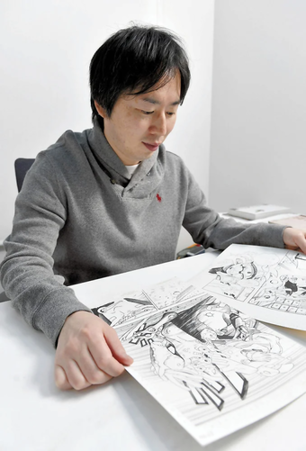
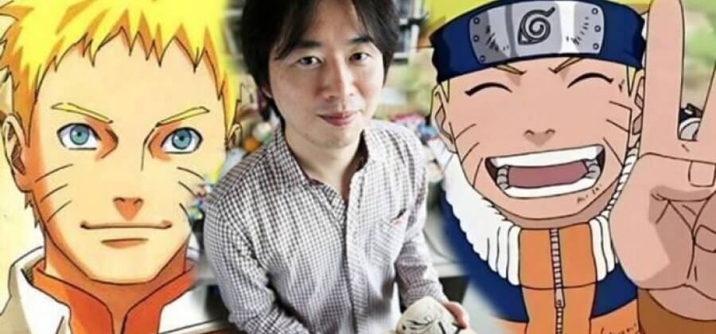
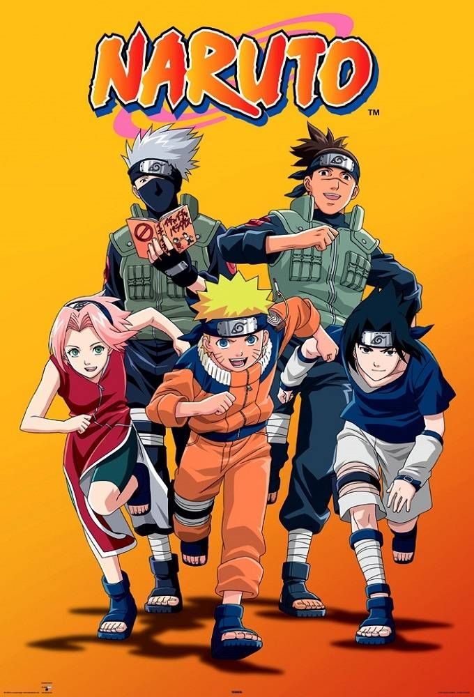
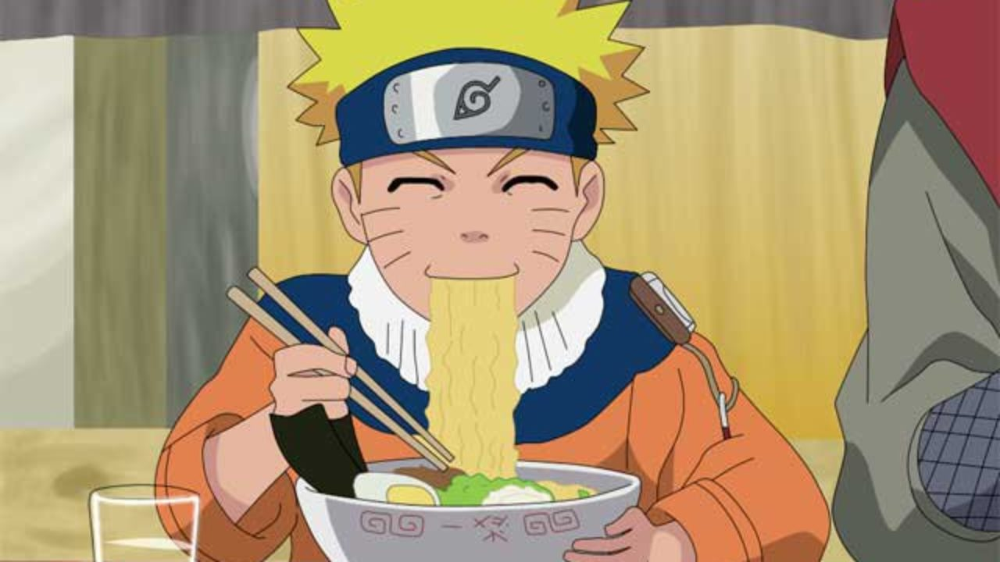

Biografia
Masashi Kishimoto sensei
História do autor
Masashi Kishimoto nasceu em 8 de novembro de 1974, no distrito de katsuta na província
de Okayama, no Japão.Tem um irmão gêmeo mais novo chamado Seishi Kishimoto.
Masashi é um mangaká, mais conhecido pela sua obra Naruto, serializado pela revista Weekly
Shõnen Jump. Desenhista desde o momento em que nasceu, era muito perfeccionista, por isso,
sempre se metia nos desenhos alheios.
Seus animes preferidos na infância e sua
maiores influências foram Doraemon, Akira, Dr. Slump, e sua maior fonte de inspiração: Dragon
Ball, da qual é fã até hoje e de seu criador Akira Toriyama.
Ínicio de dua vida como mangaká
Seu primeiro mangá foi Hiatari-kun,sobre ninjas das sombras,que ele escreveu no final do
ginásio (ensino fundamental).
Aos 14 anos de idade nasceram os primeiros rabiscos
de Naruto e, depois, Sakura e Sasuke, mas ele guardou os desenhos no fundo de seu armário.
Seu primeiro mangá publicado foi Karakuri, pela editora Sueisha em 1996. Por este mangá ele
ganhou o prémio Hop Step Award, um prêmio muito importante para os mangakás, ele é da editora
Sueisha.
Depois de ter várias de suas obras rejeitadas, Masashi entrou em uma
depressão e crise existencial, em que já não mais sabia por que era um mangaká. Foi
então que ele começou a pesquisar sobre o significado dos mangás. Após um tempo, ele
achou no fundo do seu armário uns desenhos que ele havia guardado, ele encontrou Naruto,
Sakura e Sasuke, e então, em 1999 nasceu Naruto.

Sucesso Mundial
Naruto foi um sucesso arrasador, e finalizou sua serialização em 10 de novembro de
2014 após mais de 15 anos e conta com um total de 700 capítulos coletados em 72 volumes.
Suas vendas passaram de 113 milhões de cópias no Japão e outras centenas de milhões
mundo afora.
Um sucesso que influenciou e influencia ainda hoje gerações. Não
só no Japão, mas no mundo inteiro, e não só por causa de sua temática, mas também por
sua história comovente e seus dramas muito bem desenvolvidos, além de várias lições
que é obra passa. Não é a toa que tem o sucesso e a fama que lhe precede.

Referências da vida de Kishimoto
Os personagens e a história do mangá Naruto contam muito sobre o seu criador. É
possível perceber isso pelo personagem principal Naruto, que como seu criador, tem um
vício por Ramen. Inclusive os momentos difícieis pelos quais Naruto passa, representam o
momento de rejeição das editoras pelo trabalho de Kishimoto.
Pode não parecer, mas já se foram 11 anos da vida de Kishimoto trabalhando em Naruto,
então fica mais óbvio ainda que Naruto conta uma grande parte de sua história.
